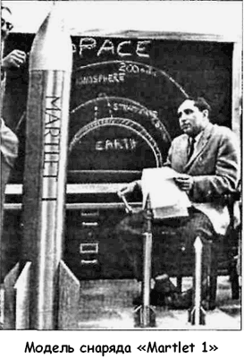
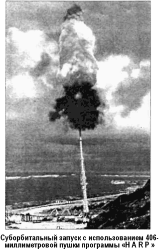

«Космические» снаряды Джеральда Бюлля
Как известно, все новое — это хорошо забытое старое. На примере материала предыдущей главы мы убедились, что развитие техники во многом основывается на этом общеизвестном соображении.
Раз за разом конструкторская мысль на очередном этапе возвращается к старым «забытым» схемам, чтобы возродить их в новом качестве под новые задачи. Электроракетные двигатели и использование атомной энергии, солнечные паруса и антигравитация — все это было придумано еще в первой четверти XX века, но обретает воплощение лишь сегодня.
Не осталась забытой и идея космической пушки, предложенная, как мы помним, еще Исааком Ньютоном, получившая развитие в романах Жюля Верна, Фора и Граффиньи и нашедшая воплощение в программе создания сверхдальнобойного орудия «Фау-3».
Однако при всей кажущейся бесперспективности этих проектов с наступлением космической эры и появлением потребности в дешевых всепогодных средствах доставки различных аппаратов на околоземную орбиту вновь заговорили о пушках. Разумеется, речь уже не шла о пилотируемом полете, но небольшие спутники таким способом в космос запустить возможно, и идея получила второе (или третье?) рождение.
Этим она прежде всего обязана талантливому канадскому конструктору — доктору Джеральду Бюллю.
Джеральд Бюль родился в 1928 году в канадской провинции Онтарио. Его карьера началась с ошеломляющих успехов — в 22 года Бюлль стал самым молодым доктором, когда-либо защищавшим диссертацию в Торонтском университете.
С 1961 года он преподавал в Макгильском университете, а в 1964 году возглавил канадский Институт космических исследований. Именно на должности директора этого института Бюлль получил возможность реализовать идею пушки, способной забрасывать снаряды на суборбитальную и орбитальную высоту.

В 1961 году Департамент исследований в области вооружений выделил доктору Бюллю 10 миллионов долларов в рамках совместной научной программы, инициированной министерствами обороны США и Канады и получившей название «Высотная исследовательская программа» («High Altitude Research Program», «HARP»).
На начальном этапе работ по программе доктор Бюлль брался доказать, что сверхдальнобойные пушки можно использовать для запуска научных и военных грузов на суборбитальные высоты. Стартовая площадка была возведена на острове Барбадос, а запуски осуществлялись в сторону Атлантики. В качестве «космической» пушки использовалось 16-дюймовое (406-миллиметровое) орудие ВМФ США весом в 125 тонн. Стандартный ствол длиной 20 метров был заменен на новый — 36-метровый. В период с 1963 по 1967 год доктор Бюлль осуществил более двухсот экспериментальных запусков с помощью этого орудия.
Первый снаряд «Martlet 1» длиной 1,78 метра и весом 205 килограммов Джеральд Бюлль представил заказчику в июне 1962 года. Снаряд был изготовлен из толстой листовой стали, внутри корпуса размещалось оборудование для радиотелеметрического контроля за ходом полета. Кроме того, на снаряде смонтировали специальное приспособление для выпуска цветного дыма, по которому можно было вести наблюдение за траекторией снаряда и произвести, оценку влияния высотных воздушных потоков на летательный аппарат.
«Martlet 1» был запущен 21 января 1963 года. Полет продолжался 145 секунд, и в ходе него снаряд достиг высоты в 26 километров и упал в 11 километрах от места старта.

Второй запуск оказался столь же успешен, и исследовательская группа проекта «HARP» приступила к разработке новой серии снарядов «Martlet 2», которые уже можно было использовать в качестве суборбитальных летательных аппаратов.
В рамках серии «Martlet 2» были сконструированы снаряды трех основных модификаций: 2А, 2В и 2С. Внешне они почти не отличаются друг от друга, но изготовлены из разных материалов. Типичный снаряд «Martlet 2» имеет стрелообразную форму с диаметром корпуса в 13 сантиметров и длиной 1,68 метра. В нижней части корпуса приварены четыре скошенных стабилизатора. Полезная нагрузка снаряда составляет 84 килограмма, общий вес вместе с выстрелом — приблизительно 190 килограммов.
Перед суборбитальными летательными аппаратами «Martlet 2» ставилась задача подробного изучения физического состояния верхних слоев атмосферы. Эта информация имела для министерств обороны США и Канады жизненно важное значение, поскольку, как мы помним, в то же самое время велись работы по созданию стратосферных гиперзвуковых самолетов и новых ракетных систем, а данных о свойствах воздушной среды на больших высотах не хватало. Полезный груз «Martlet 2» включал магнитометры, температурные датчики, электронные измерители плотности и даже метеолабораторию «Langmuir». Для того чтобы аппаратура после старта могла функционировать нормально, весь измерительный блок заливался эпоксидной смолой, которая предохраняла компоненты системы от смещения и повреждений при ускорении в 15 000 g.
Согласно первоначальным расчетам, скорость для снарядов серии «Martlet 2» не должна была превышать 1400 м/с, а максимально достижимая высота — 125 километров. Однако благодаря целому ряду усовершенствований (удлинение ствола пушки, использование новых видов пороха и способов его поджигания) удалось выйти на гораздо большие высоты.
Скорость снаряда подняли до 2100 м/с, и 19 ноября 1966 года «Martlet 2C» достиг рекордной высоты — 180 километров при полетном времени 400 секунд.
Кроме того, за цикл испытаний доктору Бюллю удалось снизить стоимость запуска полезного груза на суборбитальную высоту до 3000 долларов за килограмм.